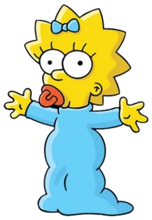

Simpson Family

The series is a satirical depiction of American life, epitomized by the Simpson family, which consists of Homer, Marge, Bart, Lisa, Maggie, Santa's Little Helper and Snowball V. The show is set in the fictional town of Springfield and parodies American culture and society, television, and the human condition.

Homer is overweight (said to be 239 pounds)[41], lazy, and often ignorant to the world around him. Although he has many flaws, he has shown to have great caring, love, and even bravery. His favorite color is blue, and he enjoys dancing, eating donuts, drinking, hugging, driving a sit-down arcade racer, playing the piano and horse riding.

(born Feburary 23 or April 1, 1980)is the mischievous, rebellious, misunderstood, disruptive and "potentially dangerous" oldest child of the Simpson family in The Simpsons. He is the only son of Homer and Marge Simpson, and the older brother of Lisa and Maggie. Bart has a 100-issue comic series entitled the Simpson Comics Presents Bart Simpson.
- “Ay Caramba!”
― Bart's catchphrase and first words
- “Eat my shorts!"
― Bart's second catchphrase

is the homemaker and matriarch of the Simpson family. Marge is the moralistic force in her family and often provides a grounding voice in the midst of her family's antics by trying to maintain order in the Simpson household.
- “Now it's Marge's time to shine!”
― Marge Simpson
- “Hrmmm….”
― Marge's catchphrase

is the elder daughter and middle child of the Simpson family. She is a charismatic 8-year-old girl, who exceeds the standard achievement of the intelligence level of children her age. Not to everyone's surprise, she is also the moral center of her family. She focuses on her goals and strives to reach her potential, and at the age of eight, she is already a member of Mensa with an IQ of 159. She has extreme jealousy from time to time and will do whatever it takes to reclaim her title as the smartest; but only if she deems it necessary. Otherwise, she's the intelligent one who usually thinks things through.
- “Bart!”
― Lisa's first word
- “BAAAAART!!”
― Lisa’s catchphrase
- “Homer.”
― Lisa's fourth word

is the 1-year-old daughter and youngest child of Marge and Homer Simpson. She is often seen sucking on her pacifier, and when she walks, she trips over her clothing and falls on her face.
- “*suck suck *”
― Maggie sucking her pacifier
- “Daddy.”
― Maggie's first word